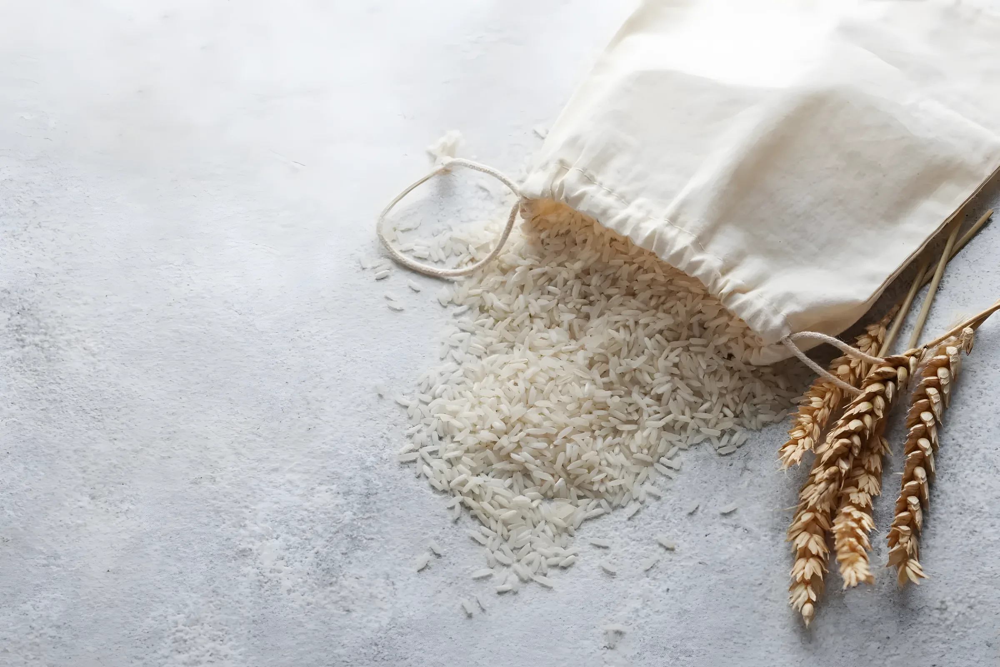
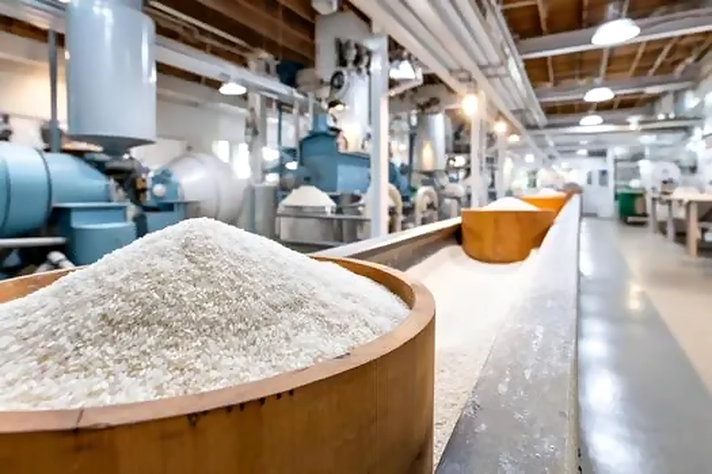
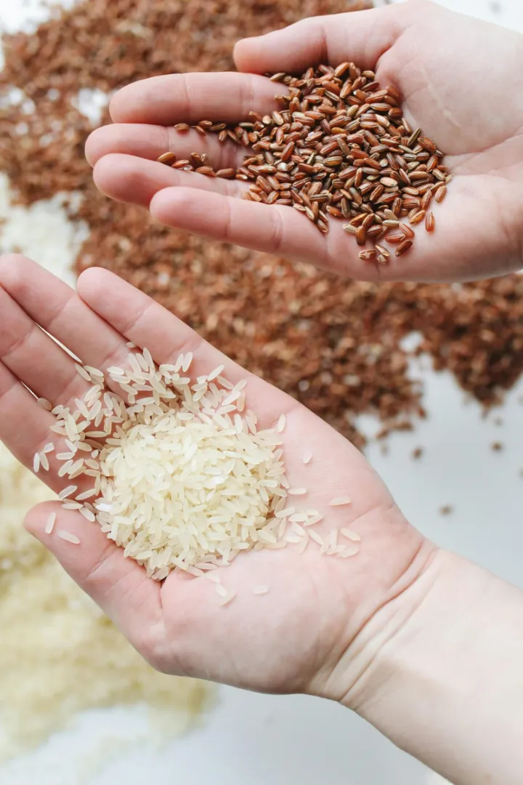
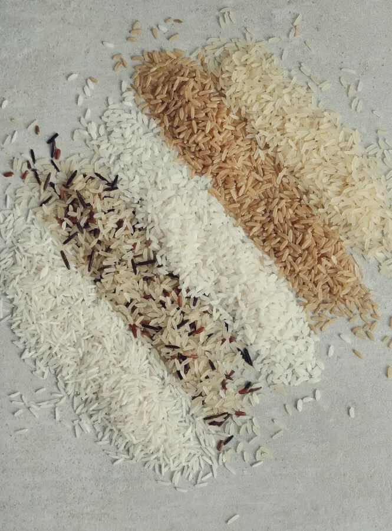
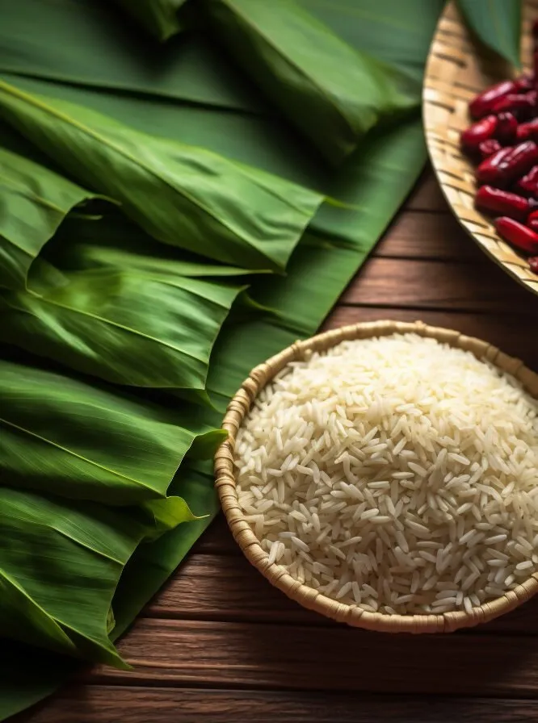
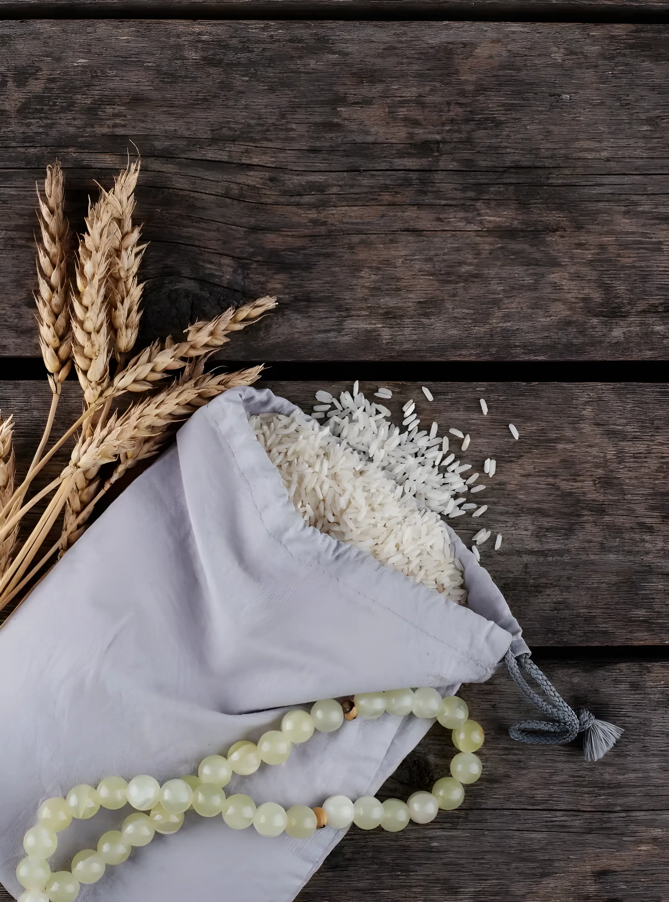
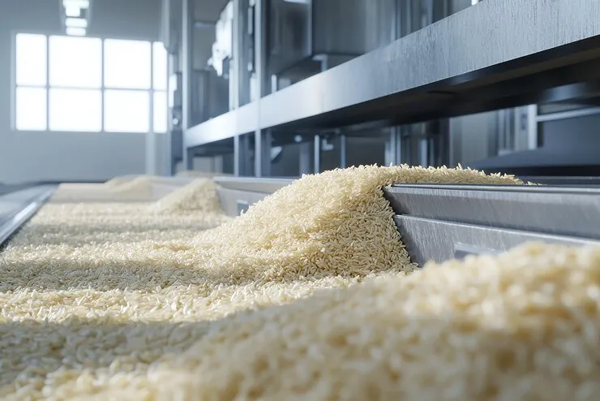

In today’s international rice marketplace, choosing the right supplier is paramount.
At Grainful, we are very proud to be the first choice among exporters of premium-quality rice. We focus on three most important aspects; quality, reliability, and hygiene.
Grainful has a good stock of excellent quality Basmati rice of various kinds.
Our stock includes the best varieties of rice, ranging from 1121 Basmati to Pusa Basmati. Every grain is purchased from the highest quality rice-producing area. This commitment to quality will make certain that each batch has a pleasant smell, a soft and airy texture, and golden long grains.
Apart from Basmati, we have premium quality non-Basmati rice in our range of products.
These varieties come from the most productive lands of India. Whether the rice is required for consumption on a daily basis or on a festive occasion, we have products that fit the need. With Grainful customers find that they can enjoy superior quality rice that can be prepared in different ways to suit the consumer’s taste buds.
Pure Goodness, Naturally Delicious.
Experience the rich aroma, authentic taste, and golden goodness of Natural Wonder Ghee. Perfect for everyday cooking, traditional Indian dishes, and adding a delicious finishing touch to your meals.
From soft rotis to homemade sweets, bring a touch of richness and tradition to every bite.
At Grainful, quality is considered the most important factor than any other consideration.
We incorporate modern technology in farming while embracing conventional practices of farming. This means that every grain that is processed is GMO-free and rich in its natural nutritional value. From the fields to your kitchen, we make sure our rice meets the highest standards.
Grainful has managed to position itself as one of the leading exporters of rice across the globe.
Some of our products are consumed by consumers from many countries all over the world. Our customers trust us because we have maintained high-quality rice that is consistent with their expectations. Every shipment is a manifestation of our commitment to quality.
Our Product Range
Our Products
We specialize in supplying the finest basmati and non-basmati rice meeting the high-standards and reliable delivery for our partners.
We place great importance on making sure that you are happy with your purchase of our rice. We have faith in what we are selling and can guarantee it against any defects over time.
However, if you find this product not satisfactory, please call upon our excellent customer care department. Such concerns would be addressed quickly and efficiently within an incredibly short time frame thus arousing no suspicion whatsoever! We ensure that your experience with us is seamless.
At Grainful, quality is the foundation of all we do. We adhere to stringent quality checks, ensuring that our rice consistently meets international standards.
Global
Global
Global Reach
We serve a vast network of clients across Asia, the Middle East, Europe, and America. Our efficient logistics ensure timely deliveries, reaching every kitchen worldwide with just a click.
Ethical
Ethical
Sustainable & Ethical Practices
Our commitment to responsible sourcing and sustainable farming methods aligns with the growing demand for ethically produced food products.

Packaging
Packaging
Custom Packaging Solutions
We offer specialized packaging solutions. From bulk orders for distributors to private-label packaging for retailers, ensuring flexibility for your business needs.
Health and Nutritional AssuranceBest Refining TechnologySafety Health and HygieneHealth and Nutritional AssuranceBest Refining TechnologySafety Health and Hygiene
Health and Nutritional Assurance
Best Refining Technology
Safety Health and Hygiene
World Class Manufacturing Facility
We use state-of-the-art technology and automatic machinery in our processing of rice to require the highest hygiene standards.

Modern machinery
We employ modern machinery to guarantee the cleanliness and safety of our rice.
Minimal human contact
Automated cleaning, milling, and packaging ensure minimizing human contact, hence proper hygiene is maintained.
Safety and health
A key component of our activities is safety and assuring our customers’ health.
How We Work
At Grainful, our rice export process is a testament to efficiency, transparency, and a commitment to delivering the finest grains to your doorstep. Here’s an insight into how we work to ensure a seamless experience for our valued customers:

Global Sourcing Expertise
Our journey begins with a meticulous selection of rice varieties sourced from the world’s finest rice-growing regions. Leveraging our global sourcing expertise, we ensure that only the best and most sought-after grains make it into our export portfolio.

Customized Solutions
We understand that each market has unique requirements. That’s why we offer customized solutions to meet the specific demands of our diverse clientele. Whether it’s specific grain varieties, packaging preferences, or private labeling, we tailor our services to suit your business needs.

Quality Assurance from Field to Fork
Quality is our top priority. We partner with skilled farmers who share our dedication to excellence. Rigorous quality control measures are implemented throughout the cultivation, harvesting, and processing stages, guaranteeing a product that meets international standards.

Efficient Processing and Packaging
Our state-of-the-art processing facilities employ the latest technology to ensure efficiency and precision. From cleaning and milling to packaging, every step is optimized for quality and speed. Our packaging is not only visually appealing but also designed to preserve the freshness and purity of our rice during transit.
Regulatory Compliance
Navigating international trade regulations is complex, but we’ve got it covered. Our team is well-versed in global trade requirements and ensures that all necessary documentation, certifications, and compliance measures are met, facilitating a smooth export process.
Continuous Improvement
Our commitment to excellence doesn’t stop at the shipment’s departure. We consistently evaluate and enhance our processes, incorporating feedback and industry advancements. This dedication to continuous improvement ensures that we remain at the forefront of the rice export market.
Our Assurance
Health is paramount, and our commitment to your well-being extends beyond flavor. Our rice is rich in essential nutrients, carefully preserved during the cultivation and milling processes.

Superior Quality
Our commitment to excellence begins with the careful selection of the finest rice varieties.
Rigorous quality control measures are implemented at every stage of production, ensuring that only the highest-grade rice reaches our customers. We understand that quality is non-negotiable, and our reputation is built on consistently delivering superior products.
Safety & Hygiene
Our processing facilities are equipped with cutting-edge technology designed to uphold the strictest hygiene standards.
From automated cleaning and milling to packaging, we employ advanced machinery to minimize human contact and ensure the utmost cleanliness of our rice.
Value for Money
Your satisfaction is our priority. We stand behind our rice with confidence, knowing that it will meet and exceed your expectations.
If, for any reason, you’re not completely satisfied, our dedicated customer support team is ready to address your concerns promptly and efficiently.
Private Label
We Make Your Brand
Interested in establishing your own brand but not quite ready to start from scratch with product development? Private-label products could be the game-changer you need. Let’s explore the realm of private-label products and understand why they’re pivotal in crafting your brand identity.
As a gourmet food supplier, we require rice that meets the highest standards of quality and taste. Grainful consistently delivers on both fronts. Their rice varieties are flavorful and versatile, perfect for our diverse clientele. The professionalism and dedication of their team make them a pleasure to work with. We highly recommend Grainful to anyone in need of superior rice products.
Etty RDelhi
We are thrilled with the organic rice we receive from Grainful. Their commitment to sustainable farming practices aligns perfectly with our values. The rice is always fresh, and the packaging is impeccable, ensuring the product reaches our shelves in perfect condition. We look forward to a long and fruitful partnership with Grainful.
Nazia EhsanGujrat
With Grainful, our journey has been nothing short of remarkable. They always ensure the highest quality standards. Their commitment to sustainability and community welfare has not only boosted our brand reputation but also brought us closer to our customers globally.
Trust us to deliver the finest rice every time.
At Grainful, we are very proud to be the first choice among exporters of premium-quality rice.